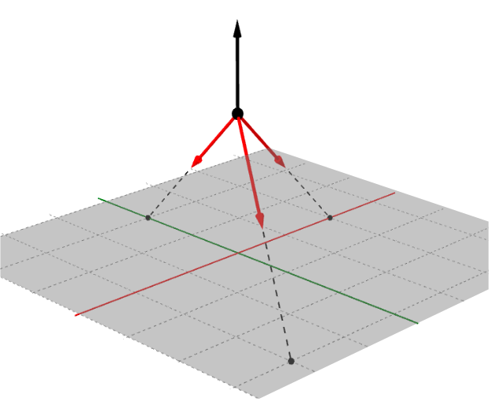

Section 3.5 Particles in Three Dimensions
The world we live in has three dimensions. One and two dimensional textbook problems have been useful for learning the principles of engineering mechanics, but to model real-world problems we will have to consider all three.
Fortunately, all the principles you have learned so far still apply, but many students have difficulty visualizing three-dimensional problems drawn on two-dimensional paper and the mathematics becomes a bit harder. It is especially important to have good diagrams and keep your work neat and organized to avoid errors.
Subsection 3.5.1 Three-Dimensional Coordinate Frame
We need a coordinate frame for three dimensions, just as we did in two dimensions, so we add a third orthogonal axis \(z\) to our existing two-dimensional frame.
For equilibrium of a particle, usually the origin of the coordinate frame is at the particle, the \(x\) axis is horizontal, and the \(y\) axis is vertical just as in a two-dimensional situation. The orientation of the \(z\) axis is determined by the right hand rule. Using your right hand, put your palm at the origin and point your fingers along the positive \(x\) axis. Then curl your fingers towards the positive \(y\) axis. Your thumb will point in the direction of the positive \(z\) axis. In this case, if the positive \(x\) axis is horizontal and to the right and the positive \(y\) axis is vertical and upwards, the positive \(z\) axis will be coming towards you. Remember that the three axes are mutually perpendicular, i.e. each axis is perpendicular to both of the others. The right hand rule is important in many aspects of engineering, so make sure that you understand how it works. Mistakes will lead to sign errors.

Subsection 3.5.2 Free Body Diagrams
As we did before, we begin our analysis by drawing a free body diagram which shows all forces and moment acting on the object of interest. Drawing a FBD in three-dimensions can be difficult. It is sometimes hard to see things in three-dimensions when they are drawn on a two-dimensional sheet. Consequently, it is important to carefully label vectors and angles, but not to clutter up the diagram with too much and/or unnecessary information. When working in two-dimensions, you only need one angle to determine the direction of the vector, but when working in three-dimensions you actually need two or three angles.
Subsection 3.5.3 Angles
As stated above, when working in three dimensions you actually need three angles to determine the direction of the vector, namely, the angle with respect to the \(x\) axis, the angle with respect to the \(y\) axis and the angle with respect to the \(z\) axis. The three angles mentioned above are not necessarily located in any of the coordinate planes. Think of it this way — three points determine a plane, and in this case, the three points are: the origin, the tip of the vector, and a point on an axis. The plane made by those three points is not necessarily the \(xy\text{,}\) \(yz\text{,}\) or \(xz\) plane. It is most likely a “tilted” plane.
The angle the vector makes with the positive \(x\) axis is usually labeled \(\theta_x\text{,}\) but any Greek letter will do. The angle the vector makes with the positive \(y\) axis is usually labeled \(\theta_y\text{;}\) and the angle the vector makes with the positive \(z\) is is usually labeled \(\theta_z\text{.}\)
As with two dimensions, angles can be determined from geometry — a distance vector going in the same direction as the force vector. This is the three-dimensional equivalent of similar triangles that you used in the two-dimensional problems.
If you know that the line of action of a force vector goes between two points, then you can use the distance vector that goes from one point to the other to determine the angles.
Let’s suppose that the line of action goes through two points \(A\) and \(B\text{,}\) and the direction of the force is from \(A\) towards \(B\text{.}\) The first step in determining the three angles is to write the distance vector from point \(A\) towards point \(B\text{.}\) Let’s call this vector \(\vec{r}_{AB}\text{.}\) Starting at point \(A\text{,}\) you need to determine how to get to point \(B\) by moving in each of the three directions. Ask yourself: to get from point \(A\) to point \(B\) do I have to move in the \(x\) direction? If so, how far do I have to travel? This becomes the \(x\) component of the vector \(\vec{r}_{AB}\) namely \(r_{AB_x}\text{.}\) Next, to get from point \(A\) to point \(B\) how far do I move in \(y\) direction? This distance is \(r_{AB_y}\text{.}\) Finally, to get from point A to point B how far do I move in the z-direction? This distance is \(r_{AB_z}\text{.}\)
When writing these scalar components pay attention to which way you move along the axes. If you travel towards the positive end of an axis, the corresponding scalar component gets a positive sign. Travel towards the negative end results in a negative sign. The sign is important.
Once you have determined the components of the distance vector \(r_{AB}\text{,}\) you can determine the total distance from point \(A\) to \(B\) using the three-dimensional Pythagorean Theorem
Lastly, the angles are determined by the direction cosines, namely
Since the force vector has the same line of action as the distance vector, by the three-dimensional version of similar triangles,
So,
Now, that is a bit of math there, but the important things to remember are:
You can use three angles to determine the direction of a force in three dimensions.
You can use the geometry to get them from a distance vector that lies along the line of action of the force.
The three direction cosine angles are not mutually independent. From (3.5.1) you can easily show that
so if you know two direction cosine angles you can find the third from this relationship.
Subsection 3.5.4 General Procedure
The general procedure for solving equilibrium of a particle (or concurrent force) problems in three dimensions is essentially the same as for two dimensions using the components method. The major differences are that you must be very careful about the orientation and direction of each axis of the coordinate frame and the angles each vector makes with each axis. When working in three dimensions there are three important angles, but the general procedure is the same. The overall procedure is presented here and then each of the new steps is explained in more detail.
Identify the particle. The particle will be the object or point where the lines of action of all the forces intersect.
Establish a coordinate system. Normally this will be a system with the origin at the particle or directly below the particle, a horizontal \(x\) axis, a vertical \(y\) axis, and the \(z\) axis coming out of the page and towards you. It is important to follow the right-hand rule when defining the coordinate system.
Draw a free-body diagram. The FBD shows the object and all the forces acting on it, and defines the symbols we will use. Every force should be labeled with a roman letter to represent its magnitude. Appropriate angles should be represented by a greek letter with a subscript indicating which axis the angle of the vector is measured against.
State any given values and identify the unknown values.
Determine the direction of each of the force vectors. Angles are usually determined by the geometry.
Count knowns and unknowns. At this point you should have no more than three unknowns remaining. If you don't, reread the problem and look for overlooked information. When solving mechanics problems, it is always helpful to know what you know and what you are looking for and this information changes as you work through your solution.
Formulate equilibrium equations. Based on the free-body diagram and using the symbols you have selected, formulate the three equilibrium equations.
Simplify. Use algebra to simplify the equilibrium equations. Get them into a form where the unknown values are alone on the left of the equals sign. Work symbolically as long as you can and avoid the temptation to insert numeric values prematurely, because this tends to lead to errors and obscures the relationships between the forces and angles.
Substitute values for symbols. When your equilibrium equations have been fully simplified in symbolic form, pull out your calculator and substitute the known values and calculate the unknowns. Indicate the units of your results, and underline or box your answers.
Check your work. Have you made any algebra or trig mistakes? If you add the components of the forces, do they add to zero? Do the results seem reasonable given the situation? Have you included appropriate units?
Example 3.5.3. Balloon.
A hot air balloon \(\ft{30}\) above the ground is tethered by three cables as shown below.
If the balloon is pulling upwards with a force of \(\lb{900}\text{,}\) what is the tension in each of the three cables?
The grid lines on the ground plane are spaced \(\ft{10}\) apart.

-
Strategy.
The three tensions are the unknowns which we can find by applying the three equilibrium equations.
We'll establish a coordinate system with the origin directly below the balloon and the \(y\) axis vertical, then draw and label a free-body diagram.
Next we'll use the given information to find two points on each line of action, and use them to find the components of each force in terms of the unknowns.
When the \(x\text{,}\) \(y\) and \(z\) components of all forces can be expressed in terms of known values, the equilibrium equations can be solved.
-
Geometry.
From the diagram, the coordinates of the points are
\begin{align*} \text{A} \amp= (-20,0,0)\amp \text{B}\amp= (30,0,20) \amp \text{C}\amp= (0,0,-20) \amp \text{D} \amp = (0,30,0) \end{align*}Use the point coordinates to find the \(x\text{,}\) \(y\) and \(z\) components of the forces.
\begin{align*} A_x \amp = \frac{-20}{L_A} A \amp A_y \amp = \frac{-30}{L_A} A \amp A_z \amp = \frac{0}{L_A} A \\ B_x \amp = \frac{30}{L_B} B \amp B_y \amp = \frac{-30}{L_B} B \amp B_z \amp = \frac{20}{L_B} B \\ C_x \amp = \frac{0}{L_C} C\amp C_y \amp = \frac{-30}{L_C} C\amp C_z \amp = \frac{-20}{L_C} C \end{align*}Where \(L_A\text{,}\) \(L_B\) and \(L_C\) are the lengths of the three cables found with the distance formula.
\begin{align*} L_A \amp= \sqrt{(-20)^2 + (-30)^2+ 0^2} \amp= \ft{36.1}\\ L_B \amp= \sqrt{30^2 + (-30)^2 +20^2} \amp= \ft{46.9}\\ L_C \amp= \sqrt{0^2+(-30)^2 + 20^2} \amp= \ft{36.1} \end{align*} -
Equilibrium Equations.
Applying the three equations of equilibrium yields three equations in terms of the three unknown tensions.
\begin{align*} \Sigma F_x \amp = 0\\ \amp A_x + B_x + C_x = 0\\ \amp - \frac{20}{36.1} A + \frac{30}{46.9} B + 0\, C = 0\\ A \amp= 1.15\, B \amp (1)\\\\ \Sigma F_z \amp= 0\\ \amp A_z + B_z + C_z = 0\\ \amp 0\, A + \frac{20}{46.9}B -\frac{20}{36.1} C = 0\\ C \amp= 0.769 \,B \amp (2)\\\\ \Sigma F_y \amp= 0\\ \amp A_y + B_y + C_z + D = 0\\ \amp -\frac{20}{36.1} A -\frac{30}{46.9} B - \frac{30}{36.1} C + 900 = 0\\ \amp 0.555\, A + 0.640\, B + 0.831\, C = \lb{900} \amp (3) \end{align*}Solving these equations simultaneously yields the answers we are seeking. One way to do this is to substitute equations (1) and (2) into (3) to eliminate \(A\) and \(C\) and solve the resulting equation for \(B\text{.}\)
\begin{align*} 0.555\, (1.15\, B) + 0.640\, B + 0.831\, (0.769 \,B) \amp= \lb{900}\\ 1.917 B \amp = \lb{900}\\ B \amp = \lb{469} \end{align*}With \(B\) known, substitute it into equations (1) and (2) to find \(A\) and \(C\text{.}\)
\begin{align*} A \amp = 1.15\, B \amp C \amp =0.769\, B \\ \amp = \lb{540} \amp \amp = \lb{361} \end{align*}
Example 3.5.4. Skycam.
The skycam at Stanford University Stadium has a mass of \(\kg{20}\) and is supported by three cables as shown. Assuming that it is currently in equilibrium, find the tension in each of the three supporting cables.
In this situation, the directions of all four forces are specified by the angles in the free body diagram, and the magnitude of the weight is known. The three unknowns are the magnitudes of forces \(\vec{A}\text{,}\) \(\vec{B}\text{,}\) and \(\vec{C}\text{.}\)
We will first find unit vectors in the directions of the four forces by inspection of the free body diagram. This step requires visualizing the components unit vectors, and determining the angles each makes with the coordinate axis.
Particle equilibrium requires that \(\sum \vec{F} = 0\text{,}\) so,
This is a 3 \(\times\) 3 system of three simultaneous equation, one for each coordinate direction, which needs to be solved for \(A\text{,}\) \(B\text{,}\) and \(C\text{.}\)
These can be solved by any method you choose. Here we will use Sage. Evaluating the coefficients and expressing the equations in matrix form gives
This is an equation in the form
Entering the coefficient matrixes into Sage.
After evaluating, we learn that